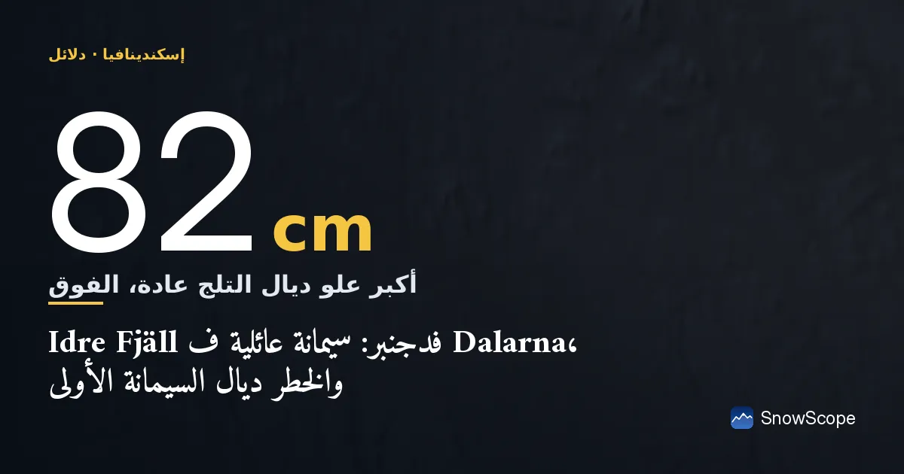
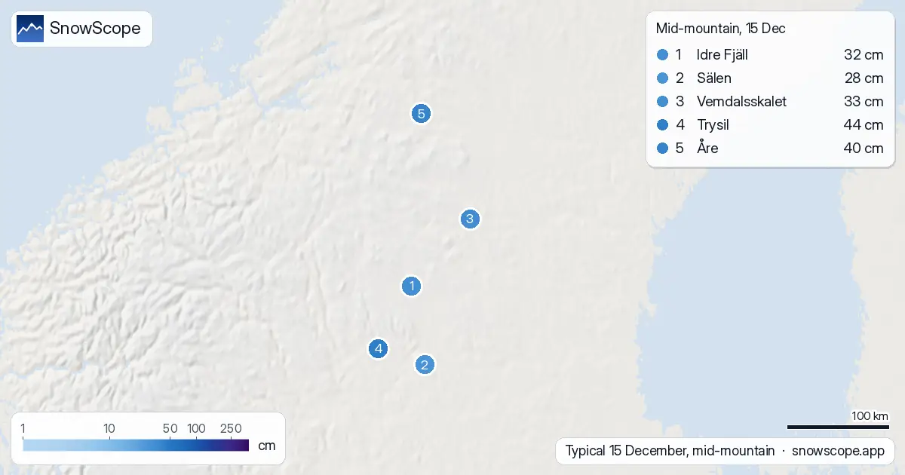

Idre Fjäll فدجنبر: سيمانة عائلية ف Dalarna، والخطر ديال السيمانة الأولى
بداية دجنبر في Idre Fjäll هي مقامرة، لكن الأسبوع قبل عيد الميلاد وأسبوع عيد الميلاد نفسه يقدمان احتمالات أفضل بكثير. في 15 دجنبر النموذجي، منتصف الجبل (733 م) يقف عند 32 سم—بقليل فوق خط 30 سم حيث التزلج يصير سهل على البيستات المحضرة. شكل الشهر مهم بزاف أكثر من مجموع التلج الجديد.
شوف توقعات التلج مباشرة ديال Idre Fjäll فالتطبيق ديال SnowScopeالعلو ديال التلج، التنبيهات والخريطة 3D، فابور.
متى تحجز إذا كنت قادر على الاختيار
فقط 39% من الشتوات اللي فاتو كانت عندها 30 سم أو أكثر في منتصف الجبل في الأسبوع الأول من دجنبر. من 8 إلى 14 دجنبر، هاد النسبة تطلع إلى 52%. الطفرة تجي في أسبوع 15-21 دجنبر، كاين 65% من الشتوات تقدر توصل إلى 30 سم أو أكثر. أسبوع الميلاد (22-28 دجنبر) هو الحيط الأمان: 76% من الشتوات عندهم غطاء ديال التلج كيفاح هاك الوقت.
في الجهة الفوقانية (888 م) الصورة حتى أحسن. أسبوع الميلاد فيه تلج كيفاح في 83% من الشتوات. إذا مرونيتك في التواريخ، تأخر أسبوع واحد يصنع فرق حقيقي في فرصتك باش تزلج على أساس صلب.


خطر الحجز في بداية دجنبر
الشتاء اللي فات (2025–26) يوضح ليش بداية دجنبر تصيبها عدم التأكد. منتصف الجبل كان عندو فقط 28 سم في 15 دجنبر و 22 سم في ليل عيد الميلاد. هاد الشي كان قابل للتزلج على البيستات المحضرة، لكن الحجارة كانت توخز من الجوانب، وشياط الكتير من الميولات طالبة تحضير حذر.
إذا قصرة حنا نحجزو الأسبوع الأول من دجنبر، دير خطة بديلة. إما شد نحو الشمال على الجبال العالية، أو كن جاهز باش تزلج فقط على البيستات المدارة وقبل غطاء رقيق في البلايص. أسبوع الميلاد في الشتاء اللي فات كان أحسن بزاف: منتصف الجبل كان عندو 29 سم في 24 دجنبر.
كيفاش تبدل الشهر
دجنبر كان قبلا عندو تلج أكثر. في الشتوات الأولى 15 من السجلات ديالنا (1980–81 إلى 1994–95)، منتصف الجبل كان في المتوسط 39 سم في دجنبر. في الشتوات الأخيرة 15 (2011–12 إلى 2025–26)، هاد الرقم نزل إلى 29 سم. النسبة ديال أسابيع الميلاد مع 30 سم نقصت من 87% إلى 60%.
هاد تبديل حقيقي، لكن هاد معناتش دجنبر ماشي موثوق فيه دابا—غير أنك قصرة اختار التواريخ ديالك بحذر. أسابيع منتصف الشهر والآخر باقي فيهم أمان حقيقي حسب معايير الجهة.
الارتفاع يصنع فرق
الجهة الفوقانية (888 م) دائما عندها تلج أكثر من القاع (578 م). في أسبوع الميلاد، منتصف الجبل عندو 30 سم أو أكثر في 76% من الشتوات، لكن الجهة الفوقانية توصل إلى 83%. اليوم الأول النموذجي مع 30 سم في منتصف الجبل هو 7 دجنبر؛ في الجهة الفوقانية هو 30 نونبر—أكثر من أسبوع قبلاش.
إذا عائلتك مريحة على الميولات الحادة والبيستات الفوقانية، عندك احتمالات أحسن باش تلقى أساس كيفاح. الارتفاع الرأسي صغير (310 م)، لكن هاد المترات عندهم أهمية في دجنبر.
شنو عن Sälen بدل هاد المحطة؟
Sälen، أبعد نحو الجنوب في Dalarna، تبان مثل البيستا في الخريطة لكن عندها احتمالات تلج أضعف في دجنبر. جبالها المستديرة تعطي قيمة واحدة على كل الجهة: 28 سم في 15 دجنبر النموذجي. فقط 48% من الشتوات عندهم 30 سم في أسبوع 15-21 دجنبر، قياس إلى 65% في منتصف جبل Idre.
إذا قصرة خطة بديلة، Sälen ماشي الواحد. إذا كنت قادر تسافر أبعد، الجبال العالية ديال النرويج أو شمال غرب السويد عطاتك عمق دجنبر أكثر موثوقية.
الخطوات العملية قبل ما تحجز
Idre Fjäll تنشر أثمان الرفع عبر الحجز الديناميكي على الموقع الرسمي ديالها. شد الثمن الدقيق للتواريخ ديالك قبل ما تلتزم. لا هنا ولا في Sälen قدرنا نأكدو ثمن ثابت في 13 نونبر.
حجز أسبوع 15-28 دجنبر إذا التواريخ فيها مرونية. إذا قصرة حنا نحجزو بداية دجنبر، طلب فابور إلغاء وشد الخريطة ديال التلج دابا في أواخر نونبر. الأيام القصيرة معناتها تحضير الوقت بحذر حول النور، والبرد يطلب طبقات ليال الزلاجين الصغار.
نصايح للي كيتزلجو
- جنب 1-7 دجنبر: فقط 39% من الشتوات عندهم 30 سم في منتصف الجبل. الأسبوع الأول مقامرة.
- قصد 15-28 دجنبر: الأسبوع قبل الميلاد وأسبوع الميلاد عطاتك احتمالات 65-76% من 30 سم أو أكثر في منتصف الجبل.
- زلج على البيستات الفوقانية إذا كنت قادر: الجهة الفوقانية (888 م) عندها تلج كيفاح في 83% من الشتوات في أسبوع الميلاد، قياس إلى 76% في منتصف الجبل.
- حجز مع فابور إلغاء إذا تواريخ دجنبر محددة شهور قبلاش، وشد التوقعات ديال التلج دابا في بداية دجنبر.
- جيب طبقات وحضر اليوم حول النور القصير. التلج الرقيق في الشتاء اللي فات في 24 دجنبر يوضح ليش التحضير والاختيار الحذر للخطوط مهم على غطاء بداية الموسم.
على هاد الأرقام
العلو ديال التلج فالمحطات هو أكثر تلج فالجهة الفوقانية فالتاريخ المكتوب؛ هادو تقديرات لمنطقة، ماشي قياس فنقطة وحدة. التوقعات يمكن تتبدل. ديما شوف النشرة الرسمية ديال الانهيارات قبل ما تخرج من البيست.
النشرات الرسمية ديال الانهيارات: Lavinprognoser (Naturvårdsverket)
كيفاش تستاشهد بهاد المقال
للبحث، التعليم ولا الصحافة: الأرقام والرسومات تقدر تعاود تخدم بيهم بحرية تحت CC BY 4.0 مع هاد الاستشهاد.
SnowScope (2026), Idre Fjäll فدجنبر: سيمانة عائلية ف Dalarna، والخطر ديال السيمانة الأولى, https://snowscope.app/blog/ar/2026/11/idre-fjall-december-family-ski-budget-sweden.html, تشاف ف 2026-11-14
SnowScope (Atlas Labs). (2026, November 14). Idre Fjäll فدجنبر: سيمانة عائلية ف Dalarna، والخطر ديال السيمانة الأولى. SnowScope snow reports. https://snowscope.app/blog/ar/2026/11/idre-fjall-december-family-ski-budget-sweden.html
BibTeX
@misc{snowscope2026idrefjalldecemberfamilys,
author = {{SnowScope (Atlas Labs)}},
title = {Idre Fjäll فدجنبر: سيمانة عائلية ف Dalarna، والخطر ديال السيمانة الأولى},
year = {2026},
month = nov,
howpublished = {\url{https://snowscope.app/blog/ar/2026/11/idre-fjall-december-family-ski-budget-sweden.html}},
note = {Published 2026-11-14 20:11 UTC; accessed 2026-11-14}
}· CC BY 4.0 · الطريقة، الداتا والأدوات →
Idre Fjäll: التلج والحرارة حسب العلو، هاد الشتا مقارنة مع اللي فاتت (الأدوات) →
تابع Idre Fjäll
فابور: ميساج ملي يجي التلج، والتوقعات كل صباح.